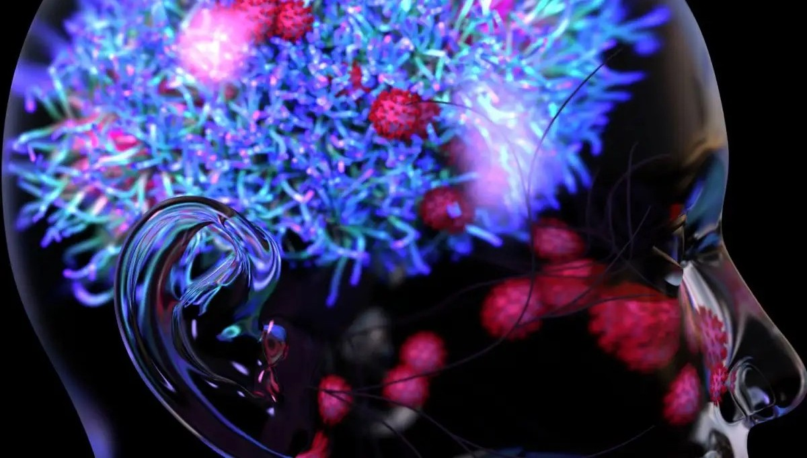

In a world that demands constant clarity, focus, and sharp decision making, the mind can feel like the very first thing to falter. For many people who lived through the COVID-19 pandemic, this struggle became more than just exhaustion. Even after recovering from the virus, a thick mental haze lingered. Tasks that once felt easy suddenly required enormous effort, and simple conversations became fogged with confusion. This is the reality of Long COVID brain fog, a condition that continues to disrupt daily life years after the pandemic began.
